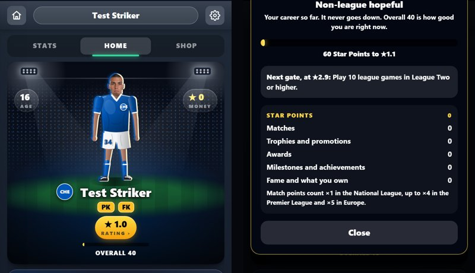
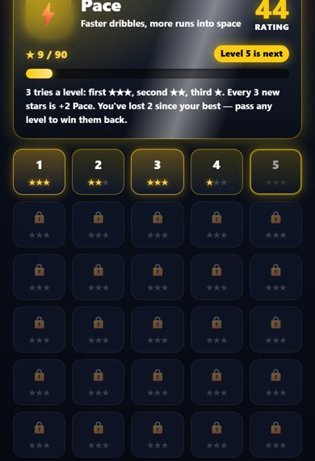
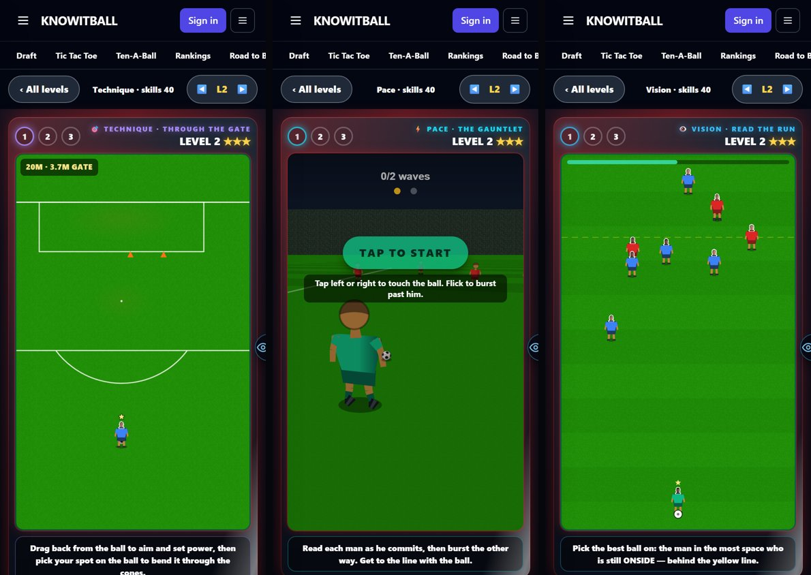
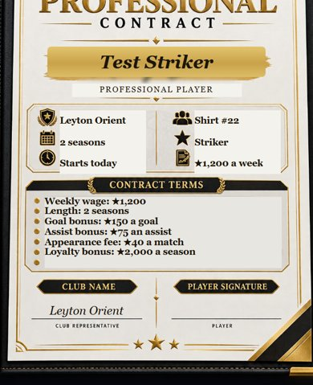

30 September 2026 · branch Mikey · 4 changes · tests: all passing except the 3 that also fail on main
Problem: the star rating was just your skills divided by 20. Everyone started on 2.0★, training was the only way up, and it told you nothing about your career.
Why: one number was doing two jobs: how good you are (what the manager picks on) and how far you have come.
Fix: two numbers. Overall is your skill average (40 for a new player) and everything that used the old rating still does: selection, wages, set pieces, transfers. Nothing about how matches play changed. The star rating is new: you earn Star Points for everything you do, it starts at 1.0★ in every career, and it never goes down. seen on Home and the star rating screen

A match: play 5, start +3, win +3, draw +1, goal 12, assist 8, hat-trick +20, Star Man 20, a rating of 8.0 or better +8. That total is multiplied by the stage: National League ×1, League Two ×1.5, League One ×2, Championship ×3, Premier League, cups and internationals ×4, Europe ×5. A one-goal Star Man win is 51 points in the National League and 204 in the Premier League. measured
Trophies: National League 250 up to Premier League 2,000; League Cup and Conference League 900; FA Cup 1,200; Europa League 1,300; Champions League 3,000; each promotion 300.
Awards: Player of the Month 50–250, Golden Boot 200–1,500, Player of the Season 300–2,000 (by division); Ballon d'Or top 10 1,000, top 3 2,500, winner 6,000.
Also: appearance, goal and cap milestones, a Premier League debut (500), signing for a bigger club (10 per reputation point), each achievement (60), each record beaten (2,500), fame levels, owning a club (1,500) and level-5 Style items.
Gates: you can't pass 2.9★, 3.9★, 4.9★ or 5.9★ until you have played 10 league games in League Two, League One, the Championship or the Premier League, or higher. Going straight from the National League to the Championship opens three gates at once. Points above a gate are banked and paid out when it opens. 6.9★ needs a major trophy or Champions League football; 7.9★ a Premier League or Champions League win and a Ballon d'Or top 10; 8.9★ a Ballon d'Or. measured
9.0★ to 10.0★ is ten Legend tasks, 0.1★ each: 4 Ballon d'Ors, 3 Champions Leagues, 5 Premier League titles, 20 trophies, a club with 95+ reputation, 500 goals and assists, every achievement, every record, Icon fame with 95 reputation, and owning a club and a level-5 Private Island.
How fast: in played-through test careers a regular going up a division a season finished on 2.7, 3.5, 4.4, 5.2 then 6.4★. A player who jumped from the National League to the Championship went 2.9★ (held at the gate) to 5.2★ in one season. The test world is easier than the real game, so expect slower. measured
A save from before this gets its Star Points worked out from its appearances, goals, trophies, awards, achievements and what it owns. It has no record of which division each old match was in, so those count at the league it is in now.
Problem: several boots were near-copies, so the choice meant nothing.
Fix: NS-Pure (starter), NS-Flash (pace), NS-Thunder (power), NS-Control (technique), NS-Elite (all-rounder), NS-Swerve (curl) and NS-Maestro (extra touch). Each still has 5 levels. A removed boot you already own lasts until it wears out. tests pass, not yet seen
Problem: a level-5 Private Island cost ★1.33m, a few weeks' money for a top earner.
Fix: every level 5 is ×7.5 (the island is exactly ★10m), level 4 is ×12 (island ★5m) and level 3 is ×4 (island ★644k). Levels 1–2 are unchanged. measured
Problem: "each level costs a day" was hard to follow, and worse in a week with a midweek match.
Fix: you get 2 training sessions a week. They come back only after your Saturday match, so a Saturday–Wednesday–Saturday week shares the 2. Relationships and rest keep their own actions. tests pass, not yet seen
The level picker is a lit card in the skill's colour with levels that glow gold by stars. The drills have a club-coloured frame, glowing try dots and a new result card. What you do in a drill is unchanged. seen


The club, number and position line under the name is gone. Age and money sit in the top corners. The name is centred with the badge on its left. "Your shop items" moved to the Shop page and lists everything you own. The next-match VS is centred and your club is ringed in green. PK and FK tags show when you take penalties or free kicks. seen
At the start of a season you get your preferred number if your manager and team-mates relationships are both 90+. A club that signs you after your first one gives it to you about 8 times in 10 (83 of 100 in the test). measured
Free kicks: a goal is 1, a save is ½, wall or miss 0. Penalties: goals scored out of 5, and the countdown is 1.8 seconds (was 1.0). That timer is shared with real matches and shootouts, so it changed there too.
The contract picture's blurred lines now carry your name, club, length, shirt number, position, wage and bonuses, on the first contract and every transfer. seen

Drag to turn him, flick to keep him spinning. The front is the real Home player; the back is a simple stand-in, because the game has no back view yet. Admin menu → Spin your player.
Problem: the score went up without anything happening on the pitch.
Fix: a long shot that could go in now stops the game and is played out. Goals conceded stay about the same: 1.20 → 1.16 a match with no defending, over 300 matches. measured
The ball on the aim screen is only grabbed near the ball (28% → 10% of the screen), so tapping a team-mate no longer starts a shot. Deleting a save no longer drops you out of full screen. Settings text is white, and the developer tools are behind a button. Trial stages have a Start or Kick off button. Long club names shrink to fit on the contract. The Boots and Style lists scroll with the page. You can't drag past the first or last Home page.